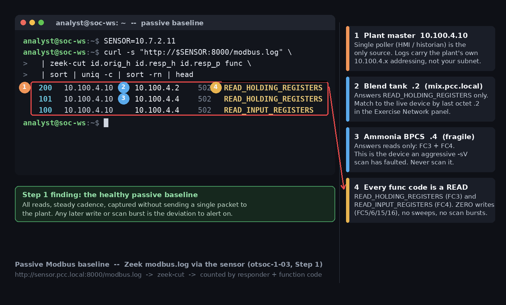

Exercise OTSOC-1.3: The Scan That Must Not Happen
Scenario
A junior analyst at Pecan Creek Creamery wants to "just run a quick Nmap" of the OT floor. Your job in the SOC is to stop that and explain why, then to show the one narrow case where a safe active query is allowed.
Aggressive active scanning is forbidden on this live plant. The ammonia PLC has faulted under an Nmap service scan before, stopped reporting, and forced a refrigeration trip. Do not point any scanner at mix.pcc.local or ammonia.pcc.local in aggressive mode. You are a defender writing a SOC standard, not an attacker.
Your passive baseline comes from the sensor at http://sensor.pcc.local:8000/. The sensor serves Zeek logs generated from a recorded capture of the plant control network, so the hosts in those logs carry the plant's own addressing (10.100.4.x), not your session subnet. A captured host lines up with a live device in your Exercise Network panel by their shared last octet. The only active action allowed in this entire exercise is a single, well-formed, read-only Modbus function-code 3 query against the blend tank, to demonstrate that one careful read is tolerated. A read-only operator account (operator / PecanCreek#2026) exists for consistency across the track; no HMI is exercised here.
Why this matters
In IT, a port scan is a first reflex and carries little risk. In OT, the same scan is a safety event. Many fielded PLCs run thin, single-purpose network stacks that were never hardened against unexpected packets. An aggressive service or version probe can crash the controller, hang its scan cycle, or trip safety logic, and the cost is not a missed scan result; it is a stopped line or, with ammonia refrigeration, a hazardous release.
The skill being trained is restraint backed by a written standard. A good OT analyst defaults to passive, knows the exact narrow conditions under which a single active query is acceptable, and can defend that line to an auditor or a plant manager. Real incidents, refrigeration trips, batch loss, and worse, have started with a well-intentioned scan run without approval. The flag here rewards the restraint: you prove it by confirming a device with one careful read, then writing the two-paragraph SOC standard and submitting it to the Deliverable Grader, which returns the flag when your standard passes the checklist. You never earn it by brute-forcing a banner.
| Credentials in scope | Username | Password | Where it is used |
|---|---|---|---|
| Operator account | operator |
PecanCreek#2026 |
Provided for track consistency; not exercised here |
Learning Objectives
- Capture a passive baseline of normal traffic from the sensor
- Articulate why aggressive scanning faults fragile OT devices
- Issue exactly one well-formed read-only Modbus FC3 query
- Write a SOC standard for passive-only versus safe-active-query
- Identify the forbidden scans from a proposed list
- Submit the standard to the Deliverable Grader to earn the flag
Walkthrough
Step 1: Set the sensor variable and capture a passive baseline
Read the sensor IP from the Exercise Network panel into a variable, then characterize normal Modbus traffic before touching any device. The point of the exercise is to prove you do not need a scanner: the sensor already saw the plant talk. Watch the responder set and the function codes in the baseline; they are what "normal" looks like.
Kali - capture the sensor IP and read the Modbus baseline
Expected output (the capture uses the plant control network 10.100.4.0/24)
Normal traffic is the plant master polling the PLCs with read function codes at a steady cadence: the blend tank (.2) answers READ_HOLDING_REGISTERS, the ammonia BPCS (.4) answers READ_HOLDING_REGISTERS and READ_INPUT_REGISTERS. Every function code is a read. No writes, no broad sweeps, no version probes. You captured the plant's healthy fingerprint without sending a single packet to it, and any future deviation from this read-only baseline is a detection opportunity.

Step 2: Understand the failure mode (do not reproduce it)
An aggressive Nmap service scan (-sV) against the fragile ammonia PLC sends rapid, malformed, and unexpected probes that the controller's network stack was never built to absorb. On this plant, that pattern has faulted the ammonia PLC, stopped it reporting, and forced a refrigeration trip. You read about the consequence; you do not recreate it on the live device. There is no command to run in this step, and that absence is the lesson.
Never scan the fragile ammonia PLC
Do not run nmap -sV, nmap -sS -p-, or any aggressive scan against ammonia.pcc.local or mix.pcc.local. Aggressive scanning on a live plant is a safety event, not a recon step. The forbidden patterns exist in this workbook only as text for your SOC standard.
Step 3: Contrast with one well-formed read-only query
Now show the narrow allowed case. A single, rate-limited, read-only Modbus function-code 3 query against the blend tank is exactly what the PLC's master sends every cycle, so the controller tolerates it. You open one connection, read the vendor ident registers, and disconnect. Watch the printed ident: a clean string means the device answered one careful read without faulting.
The baseline showed the blend tank in the capture as 10.100.4.2. Query the LIVE device: the two subnets line up by their shared last octet, so use the Exercise Network panel IP for the blend tank, the one whose last octet is .2.
Kali - one well-formed FC3 read of the blend tank ident
MIX=<your panel IP ending in .2> # blend tank, from the Exercise Network panel
python3 - <<'PY'
import os
from pymodbus.client import ModbusTcpClient
host = os.environ.get("MIX")
c = ModbusTcpClient(host, port=502)
c.connect()
# FC3: read-only. One request, then disconnect.
r = c.read_holding_registers(99, 4, slave=1)
ident = ''.join(chr((x >> 8) & 0xFF) + chr(x & 0xFF) for x in r.registers).rstrip('\x00')
print("blend tank ident:", ident)
c.close()
PY
The blend tank returned its vendor ident and stayed online. One well-formed read, function code 3, against a known register, on the device that already expects reads from its master, is the difference between safe discovery and a fault. Compare this to Step 2: same plant, opposite outcome, because of how you touched it.
Step 4: Write the SOC standard and classify the proposed scans
Turn what you just demonstrated into a two-paragraph SOC standard. Paragraph one: passive-by-default, the sensor is the primary discovery tool and no active traffic reaches the plant without cause. Paragraph two: the single exception, a rate-limited read-only query (function code 3 only) to confirm one device, gated behind named approval and a change window.
Then classify the five proposed scans. Three are forbidden on a live plant; two are acceptable.
Proposed-scan classification:
Proposed action Verdict Why nmap -sVaggressive version probe of the ammonia PLCforbidden Malformed probes fault fragile controllers nmap -sS -p-SYN sweep across the control subnetforbidden Broad, noisy, can hang thin OT stacks Modbus write probe (FC 5/6/15/16) of any device forbidden Writes can change process state; never on a live plant Read the passive sensor logs over HTTP acceptable No packets reach the plant One approved rate-limited read-only FC3 query to confirm a device acceptable, with approval Matches normal master traffic; gated by change control
The pattern: anything that writes, sweeps broadly, or probes versions aggressively is out. The only active exception is a single read that looks identical to the plant's own normal polling, and even that needs an approval gate.
Output Interpretation
- The passive baseline is all reads at a steady cadence; that is the shape of a healthy plant and the reference any deviation is alerted against
- The same plant faults under an aggressive scan but tolerates one well-formed read; the variable is how you touch it, not which host
- Function code 3 is a read and is the only allowed active action here; function codes 5, 6, 15, and 16 are writes and are forbidden
- A SOC standard is a control; an analyst's good intentions are not, which is why the allowed read sits behind a named approval gate
Analysis Questions
1. Why can an Nmap service scan fault an OT PLC when it would never faze an IT server?
Reveal answer
Many PLCs run minimal, single-purpose network stacks built for a known master sending well-formed requests, not for the malformed, high-rate, unexpected probes an aggressive scan generates. Where an IT server's hardened stack shrugs them off, the PLC can crash, hang its scan cycle, or trip safety logic. In OT availability is paramount, so the risk is unacceptable.
2. A single read-only FC3 query and an Nmap -sV probe both "just read" the device. Why is one allowed and the other forbidden?
Reveal answer
The FC3 query is one well-formed request to a known register, identical to what the PLC's master sends every cycle, so the controller handles it as routine. An -sV probe fires many crafted and out-of-spec packets across ports and function codes to fingerprint services, which is exactly the malformed-input pattern fragile controllers fault on. Intent is the same; risk profile is not.
3. Your standard allows the safe read only "with approval." Why add a gate to an action you already proved is safe?
Reveal answer
The gate enforces accountability and timing. Approval ensures operations knows a tool is on the wire, the change window avoids overlapping a sensitive batch, and the record means any coincident process upset can be cleared or attributed. Safe in isolation is not the same as safe at an arbitrary moment on a running plant.
Capture the Flag
There is no banner to brute-force in this exercise. The flag is the reward for restraint: you confirmed the blend tank with one careful read instead of a scan, and you wrote the SOC standard that keeps the plant safe. The descriptive marker names exactly that outcome, a safe query that caused no plant fault.
You earn the flag in two parts. First, complete the safe FC3 read in Step 3 so the blend tank answers and stays online. Second, write the two-paragraph SOC standard from Step 4 (passive-only baseline, the one narrow safe FC3 read, the approval gate, and the forbidden scans) and submit it to the Deliverable Grader for scoring. The grader is the rubric host shown in the Exercise Network panel, serving HTTP on port 80; it checks your standard against a fixed checklist and returns the flag only when the standard passes.
Before you POST, you can pull the checklist the grader expects with GET /rubric?deliverable=restraint-standard, which lists the required elements without revealing the flag. When your standard covers them, submit it. Read the grader IP from the Exercise Network panel into GRADER, then submit.
Kali - submit your SOC standard to the grader
GRADER=<grader-ip-from-panel> # rubric host, HTTP 80
curl -s -X POST "http://$GRADER/check" \
-H 'Content-Type: application/json' \
-d '{"deliverable":"restraint-standard","submission":"<your two-paragraph SOC standard: passive-only baseline, the one narrow safe FC3 read, the approval gate, and the forbidden scans>"}'
The response is JSON with passed, score, and total. A passing standard returns {"passed": true, ..., "flag": "OCR{safe_query_no_plant_...}"}; a failing one returns passed false with no flag and a lower score, so revise against the rubric and POST again. Copy the returned flag into the OCR platform to record your completion.
Flag format:
OCR{safe_query_no_plant_...}